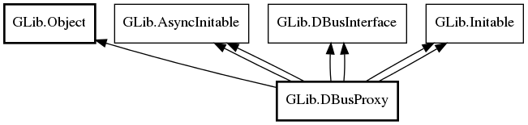

DBusProxy
Object Hierarchy:

Description:
Namespace: GLib
Package: gio-2.0
Content:
Properties:
Static methods:
- public static async DBusProxy create_for_bus (BusType bus_type, DBusProxyFlags flags, DBusInterfaceInfo? info, string name, string object_path, string interface_name, Cancellable? cancellable = null)
- public static async DBusProxy new (DBusConnection connection, DBusProxyFlags flags, DBusInterfaceInfo? info, string? name, string object_path, string interface_name, Cancellable? cancellable = null)
Creation methods:
- protected DBusProxy ()
- public DBusProxy.for_bus_sync (BusType bus_type, DBusProxyFlags flags, DBusInterfaceInfo? info, string name, string object_path, string interface_name, Cancellable? cancellable = null) throws Error
- public DBusProxy.sync (DBusConnection connection, DBusProxyFlags flags, DBusInterfaceInfo? info, string? name, string object_path, string interface_name, Cancellable? cancellable = null) throws Error
Methods:
- public async Variant call (string method_name, Variant? parameters, DBusCallFlags flags, int timeout_msec, Cancellable? cancellable = null) throws Error
- public Variant call_sync (string method_name, Variant? parameters, DBusCallFlags flags, int timeout_msec, Cancellable? cancellable = null) throws Error
- public async Variant call_with_unix_fd_list (string method_name, Variant? parameters, DBusCallFlags flags, int timeout_msec, UnixFDList? fd_list = null, Cancellable? cancellable = null, out UnixFDList? out_fd_list = null) throws Error
- public Variant call_with_unix_fd_list_sync (string method_name, Variant? parameters, DBusCallFlags flags, int timeout_msec, UnixFDList? fd_list = null, out UnixFDList? out_fd_list = null, Cancellable? cancellable = null) throws Error
- public Variant get_cached_property (string property_name)
- public string[] get_cached_property_names ()
- public weak DBusConnection get_connection ()
- public int get_default_timeout ()
- public DBusProxyFlags get_flags ()
- public DBusInterfaceInfo get_interface_info ()
- public unowned string get_interface_name ()
- public unowned string get_name ()
- public string get_name_owner ()
- public unowned string get_object_path ()
- public void set_cached_property (string property_name, Variant? value)
- public void set_default_timeout (int timeout_msec)
- public void set_interface_info (DBusInterfaceInfo? info)
Signals: